|  | Home |  |
Blogs | |
Resume |  |
Portfolio |  |
Research |  |
Contact Me |
Researced Websites
Website I built
This portfolio belongs to a Chemical Engineer and Research Assistant. I took this website as my inspiration and a guide to create my personal portfolio. The theme of the website is simple and attractive. So, I also built a simple portfolio website which includes neccessary information in suitaqble manner.
This is the resume page of my website. As per my reference, I have detailly filled this page with the necessary content. Like in reference website, have put my image along with my short description. Below, I have used grid explaining my work till the date.
Researced Websites
W3schools website is a great help for the beginners, who want to learn web-designing using html, css and javascrip as the tool.
This website contains necessary codes and formats. It very easy to dive in and search the certain part you ant inyour website. This
website is handful of informations.
Surfing in the youtube has always been fruitful since you can learn new aspects by watching the tutorials of the subject you want.
Youtube was helpful for me to know the applictions of carousal and grids in the website. By watching the tutorial videos, concepts
became clearer.
JavaScript is very important component to make your website interactive with the user. Hereby, joining the website "JavaScript.com",
you can learn, various fundamental codes which can be used in your website to make it presentable.
This website can be helpful to get knowledge about the styles of you website. Here, you can get different styles and arrangement for
for different pages. Therefore, the frame of your website can be inspired with some of the examples in this website.
W3schools website is a great help for the beginners, who want to learn web-designing using html, css and javascrip as the tool. This website contains necessary codes and formats. It very easy to dive in and search the certain part you ant inyour website. This website is handful of informations.
Surfing in the youtube has always been fruitful since you can learn new aspects by watching the tutorials of the subject you want. Youtube was helpful for me to know the applictions of carousal and grids in the website. By watching the tutorial videos, concepts became clearer.
JavaScript is very important component to make your website interactive with the user. Hereby, joining the website "JavaScript.com", you can learn, various fundamental codes which can be used in your website to make it presentable.
This website can be helpful to get knowledge about the styles of you website. Here, you can get different styles and arrangement for for different pages. Therefore, the frame of your website can be inspired with some of the examples in this website.